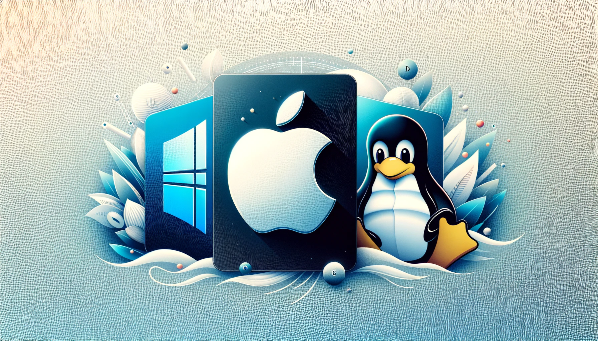

Escolher o sistema operacional (SO) certo para suas necessidades pode ser uma decisão complexa, pois cada um dos principais SOs tem suas próprias características, vantagens e desvantagens. Vamos explorar as principais diferenças entre Windows, macOS e Linux para ajudá-lo a tomar uma decisão informada.
1. Principais Características
Windows
- Desenvolvedor: Microsoft
- Popularidade: Amplamente usado em desktops e laptops
- Interface: Interface gráfica familiar e fácil de usar com o Menu Iniciar
- Compatibilidade: Suporte para uma vasta gama de software e hardware
- Segurança: Atualizações regulares de segurança; mais suscetível a malware devido à sua popularidade
macOS
- Desenvolvedor: Apple
- Popularidade: Utilizado em computadores Mac (MacBook, iMac, etc.)
- Interface: Interface elegante e intuitiva com o Dock e a barra de menus
- Compatibilidade: Otimizado para hardware Apple; integração perfeita com outros produtos Apple
- Segurança: Menos vulnerável a malware; atualizações regulares de segurança
Linux
- Desenvolvedor: Comunidade de código aberto (várias distribuições)
- Popularidade: Popular entre desenvolvedores e entusiastas de tecnologia
- Interface: Variável; pode ser altamente personalizado (GNOME, KDE, etc.)
- Compatibilidade: Suporte para uma ampla gama de hardware; pode exigir configuração manual
- Segurança: Alta segurança; menos alvo de malware devido ao menor uso geral
2. Vantagens e Desvantagens
Windows
- Vantagens:
- Ampla compatibilidade com software e hardware
- Interface de usuário familiar
- Grande comunidade de suporte
- Desvantagens:
- Maior vulnerabilidade a vírus e malware
- Custo de licença
- Requisitos de hardware mais altos para versões mais recentes
macOS
- Vantagens:
- Integração perfeita com o ecossistema Apple
- Alta estabilidade e segurança
- Design elegante e intuitivo
- Desvantagens:
- Alto custo de hardware
- Menos opções de personalização
- Compatibilidade limitada com software não Apple
Linux
- Vantagens:
- Gratuito e de código aberto
- Alta segurança e estabilidade
- Altamente personalizável
- Desvantagens:
- Curva de aprendizado mais íngreme
- Compatibilidade de software pode ser um problema
- Suporte técnico pode variar dependendo da distribuição
3. Experiência de Uso e Interface
Windows
O Windows oferece uma interface gráfica fácil de usar com o Menu Iniciar, a Barra de Tarefas e a Área de Trabalho. É conhecido por sua acessibilidade e familiaridade, o que o torna uma escolha popular para usuários de todos os níveis de habilidade.
macOS
O macOS é conhecido por sua interface elegante e minimalista. A integração com outros produtos Apple, como o iPhone e o iPad, proporciona uma experiência de usuário coesa. A Dock e a barra de menus são elementos centrais na navegação do macOS.
Linux
A experiência de uso do Linux pode variar amplamente, dependendo da distribuição e do ambiente de desktop escolhido. Distribuições populares como Ubuntu, Fedora e Mint oferecem interfaces amigáveis, enquanto outras podem exigir mais conhecimentos técnicos para personalização e uso.
4. Compatibilidade com Software e Hardware
Windows
Devido à sua popularidade, o Windows oferece a maior compatibilidade com software e hardware. A maioria dos programas comerciais, jogos e aplicativos de produtividade são desenvolvidos para Windows.
macOS
O macOS tem uma excelente compatibilidade com software desenvolvido pela Apple e muitos aplicativos comerciais populares. No entanto, a seleção de jogos e alguns softwares especializados pode ser mais limitada em comparação com o Windows.
Linux
O Linux oferece uma ampla gama de software de código aberto e gratuito. Embora a compatibilidade com software comercial possa ser limitada, muitas alternativas de código aberto estão disponíveis. O suporte a hardware pode exigir configurações adicionais, especialmente para dispositivos mais novos.
5. Segurança e Privacidade
Windows
O Windows é mais suscetível a vírus e malware devido à sua ampla base de usuários. No entanto, a Microsoft lança atualizações de segurança regulares e existem muitos programas antivírus disponíveis para proteção adicional.
macOS
O macOS é conhecido por sua segurança robusta. A Apple implementa várias camadas de proteção e lança atualizações de segurança regulares. O macOS também é menos visado por malware em comparação com o Windows.
Linux
O Linux é altamente seguro e menos alvo de malware. A comunidade de código aberto trabalha continuamente para identificar e corrigir vulnerabilidades. A natureza do Linux permite um maior controle sobre a privacidade e a segurança do sistema.
6. Personalização e Flexibilidade
Windows
O Windows oferece algumas opções de personalização, como temas e configurações de aparência. No entanto, as opções são limitadas em comparação com macOS e Linux.
macOS
O macOS oferece menos opções de personalização, mas compensa com uma experiência de usuário refinada e coesa. As opções de personalização são focadas principalmente na aparência e no comportamento do sistema.
Linux
O Linux é altamente personalizável, permitindo que os usuários modifiquem praticamente todos os aspectos do sistema. Isso inclui a escolha de diferentes ambientes de desktop, temas, e até mesmo a compilação do próprio kernel do sistema.
Conclusão
A escolha entre Windows, macOS e Linux depende das suas necessidades específicas, preferências pessoais e o ambiente em que você planeja usar o sistema operacional. Cada um tem suas próprias forças e fraquezas:
- Windows: ideal para usuários que precisam de compatibilidade com uma ampla gama de software e hardware e preferem uma interface familiar.
- macOS: excelente para aqueles que já estão integrados no ecossistema Apple e valorizam uma experiência de usuário elegante e segura.
- Linux: perfeito para entusiastas de tecnologia, desenvolvedores e aqueles que valorizam a personalização, a segurança e o custo-benefício.
Independentemente do sistema escolhido, é importante considerar o uso pretendido e as prioridades pessoais para garantir a melhor experiência possível.